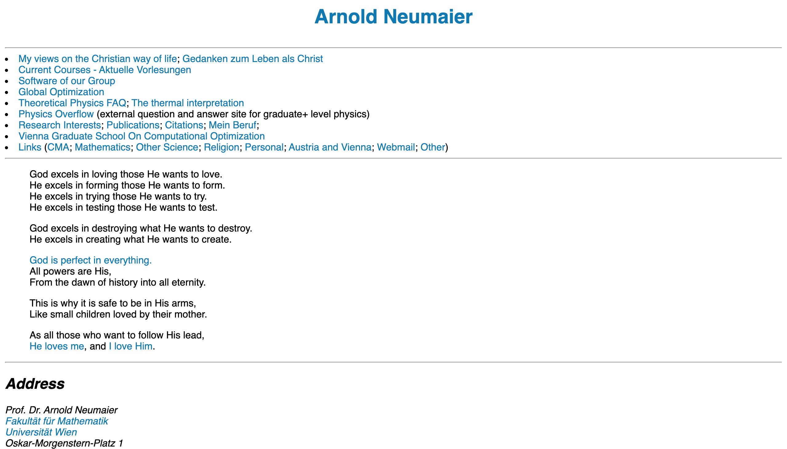
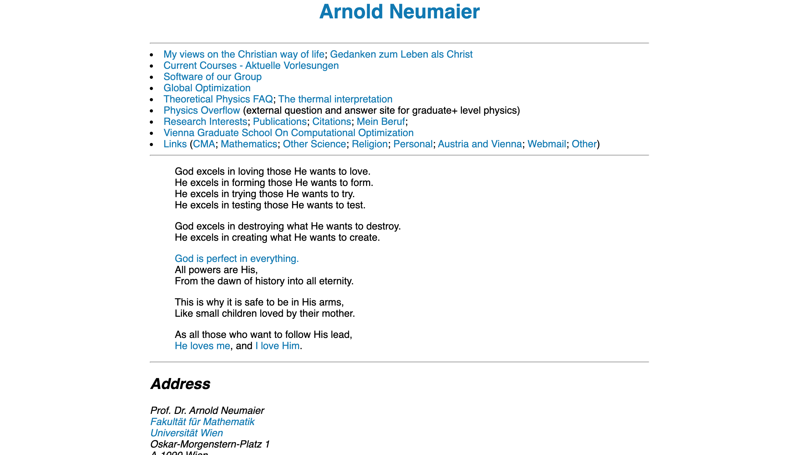
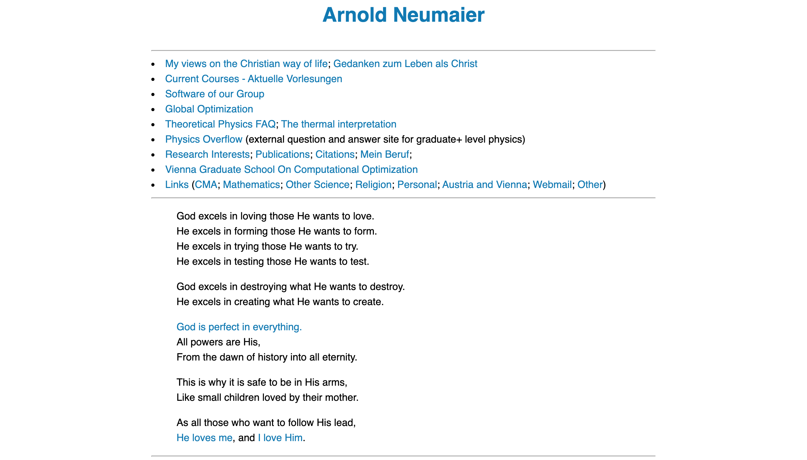
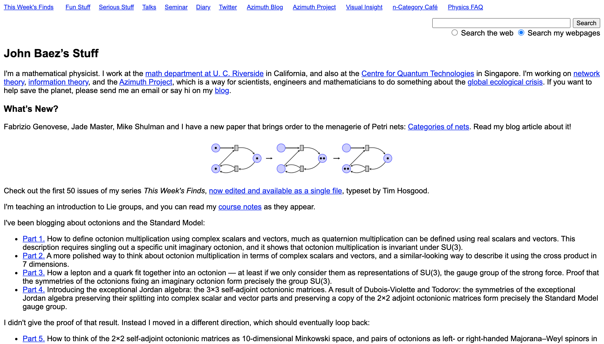
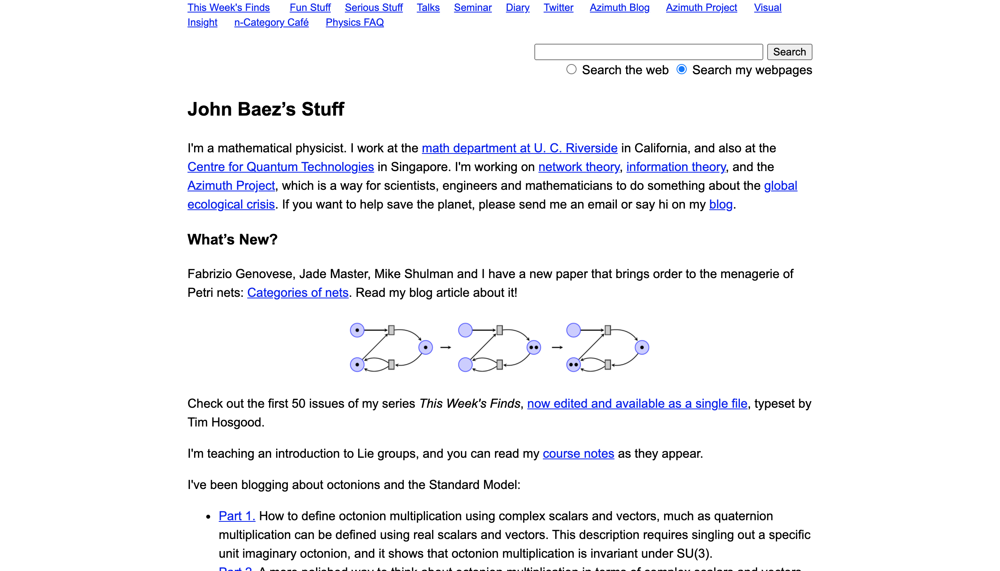
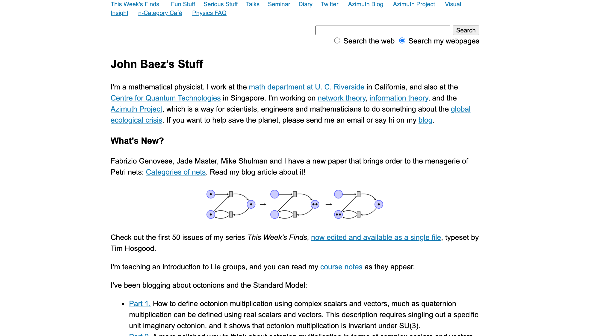
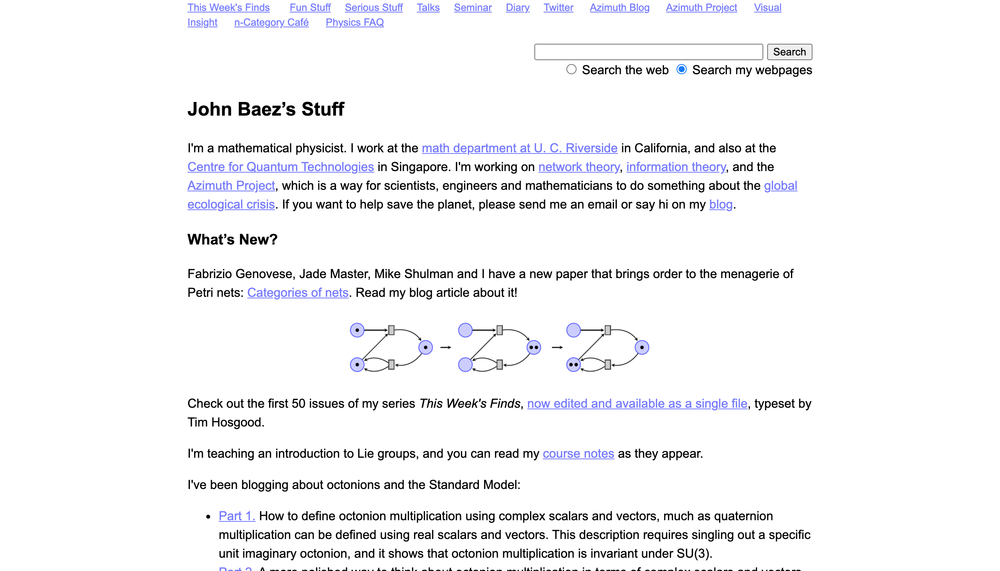
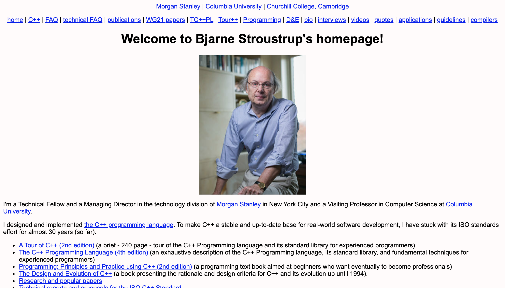
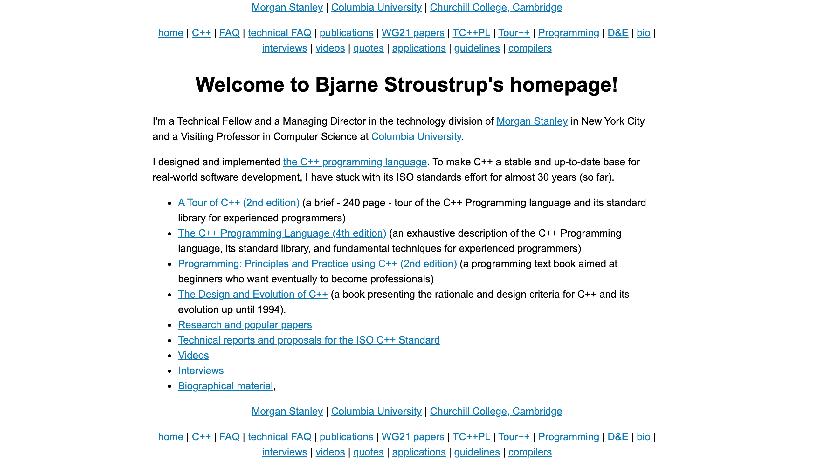

I have a guilty pleasure of visiting websites of professors. Their, um... minimal design brings me back to when I first went online in the early 2000s. Their aesthetic, or lack thereof, inspires nostalgia, but at the same time, is, well, really bad. Text going to the edge of the screen, Times New Roman, microscopic line height, pure blue links... it's a sight to behold. But because of this the sites have instantaneous loading times, and free up the professor to make some amazing content.
Just for fun though, I want to go over a few simple CSS declarations that would modernize these sites without compromising their overall simplicity.
We'll look at three examples:
Arnold Neumaier is a math professor at the University of Vienna. He's written a ton on math, physics, computers, and the philosophy of those things. None of that's relevant here though, 'cause look at this website:
How are we supposed to concentrate on the content with that form factor?
First, the positives. The background is white. Not the only choice, but a great one. So many websites have egregious colors or repeating patterns that are only distracting, but it's pretty much impossible to go wrong with default white. Another great thing about this site is the color of the links, which instead of the default #0000FF is a nice relaxing #0078B4. This is pretty rare in the world of professor websites, so props are certainly in order. Unfortunately, not everything about the default styles are fixed.
The most immediately obvious problem is that the text goes all the way to the edge of the screen. The problem with this is that people aren't used to reading such wide paragraphs, so when their eye has to go to the next line they often lose their place. Ideally the width of a paragraph on the screen would be about the size you'd see in a book. That's the width most people are used to, and it's a time-tested choice.
This can be fixed with just two lines of CSS:
body { max-width: 50rem; margin: auto; }
The first declaration makes the width of the body fixed to 50 times the size of the root element's font size. Given that this font size is typically 16 pixels, this means that in this case we're setting the width of the body to 800 pixels. Other widths also work though; anything between 30 and 60 rem can work depending on what you're going for. This blog uses 40 rem.
The second declaration of margin: auto makes the body centered in the middle of the screen.
After applying these changes, we get the following:
From here there's only one more change to be made, and that's fixing the line height. Line height is the gap between lines of text, and makes a surprising impact on the look of a site. Unlike the width of a body of text, where it should usually be around that of a book, websites look best when the line height is quite a bit more than that of a book.
To implement this, we need just a single declaration of CSS:
body { line-height: 1.5; }
This makes the line height 1.5 times that of the default, resulting in the following:
And that's it. Of course, there's no end to all the different styling you could do, but these three declarations of CSS I think are more than sufficient to drastically improve the quality of this site and many others like it. As evidence of that, let's look at our second example.
John Baez is a mathematical physicist at UC Riverside, and has this as his personal site:
Many of the same problems as the last site, so let's apply the exact same CSS declarations:
body { max-width: 50rem; margin: auto; line-height: 1.5; }
Doing this yields a much improved site:
However, this site, unlike the last, commits the cardinal sin of leaving the default link color. We can change that to the color Arnold Neumaier used with the following code:
a { color: #0078B4; }
Which results in the following site:
But links don't have to be blue. The rest of Baez's site makes use of a particular shade of purple (#7475FF), so we can use that to give the site more of its own identity:
And I think we can call it good. This is now a highly readable and good looking site, fixed with just four declarations.
Finally, we'll look at one last example.
A man who needs no introduction, the inventor of C++ has a pretty bad website:
This commits many of the indecencies we've seen in the previous sites, so we'll clean it up in the same way. The only additional change we'll make is to give a white background. The current color certainly isn't the worst I've seen, but good ol' fashioned white never goes wrong. Our CSS will be
body { max-width: 50rem; margin: auto; line-height: 1.5; background: white; } a { color: #0078B4; }
but in addition to this, we'll also remove the image. Everyone visiting the site will already know Stroustrup's striking gaze, so it doesn't provide much information for the average viewer. Leaving it up is certainly fine, but to really make it look good we'd probably want it off to the left with text to its right, so that it doesn't create all of that white space (white space is often a very good thing, but in this case it makes things look unbalanced). It wouldn't take much CSS, but this all about doing the least possible, and removing an image is certainly doing very little.
Making these changes grants us this beauty:
So if you're a professor making a website, think about implementing the above changes. White background, a thinner and centered body, increased line height, better color links. That's often enough to make a site that makes people reminisce about the early days of the web into a modern site where the focus is the content.